Top 6 Injection Mistakes
By Aripublished 2026-10-21 | last updated 2026-10-23
A French translation by uriel can be accessed here: Top 6 des erreurs d’injection.
A Russian translation by esmeralda can be accessed here: 6 основных ошибок при инъекциях.
Top 6 Injection Mistakes
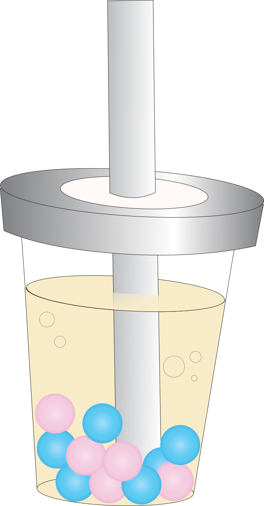
(and how to avoid them)
Incorrectly opening the vial top (… or not!)
If your vial has a small metal disk covering the stopper, do remove that before drawing…
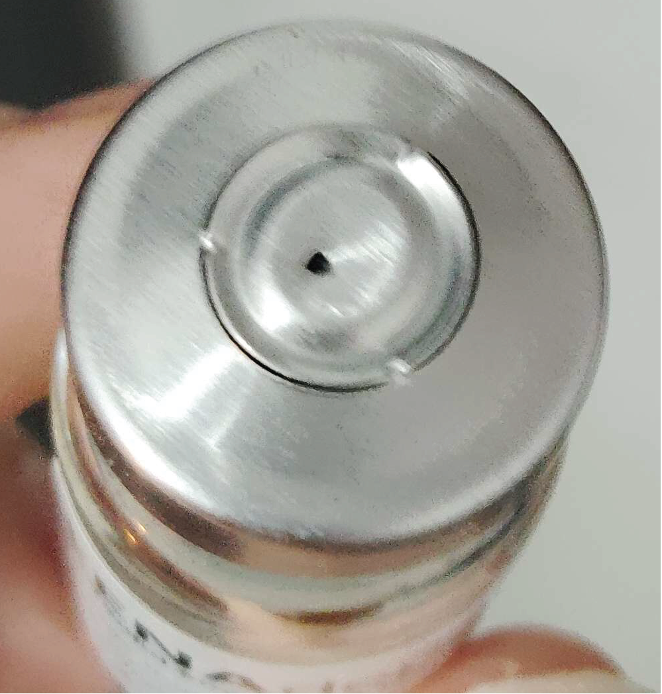
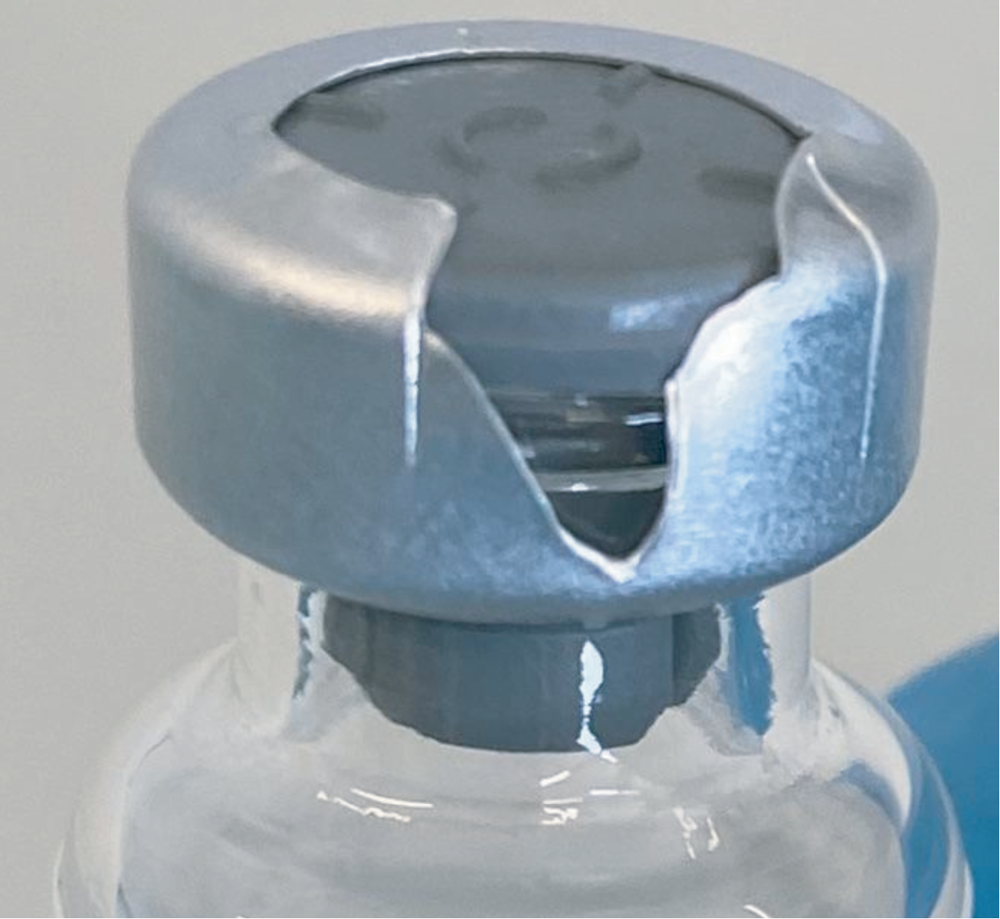
But don’t remove the entire metal cuff holding the stopper in place!
How to correctly expose the stopper:
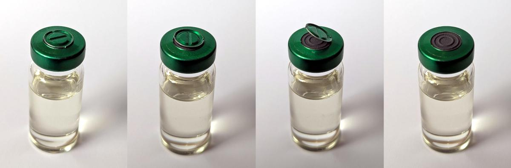
Improvisational vial cleaning
Don’t clean your vial top with:
- hand sanitizer
- bleach
- iodine
- water
- 100% alcohol
or anything else other than…
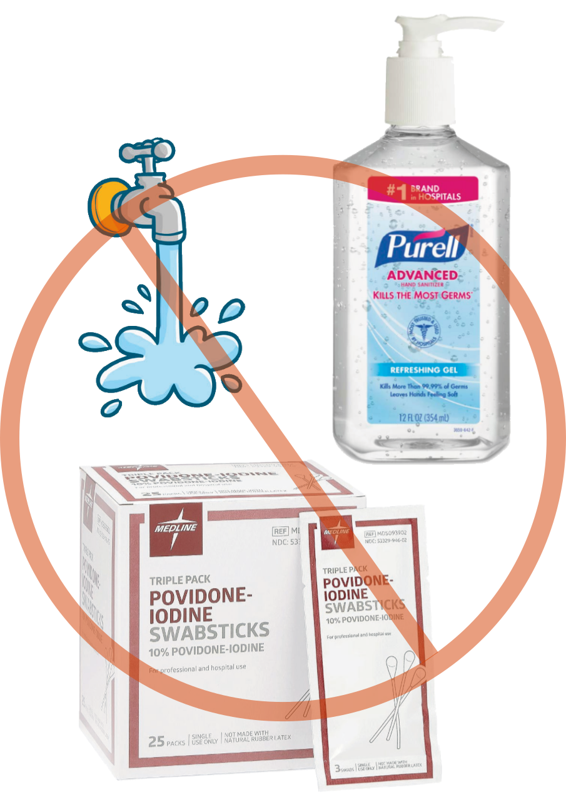
70% ethanol or isopropanol prep pads!1
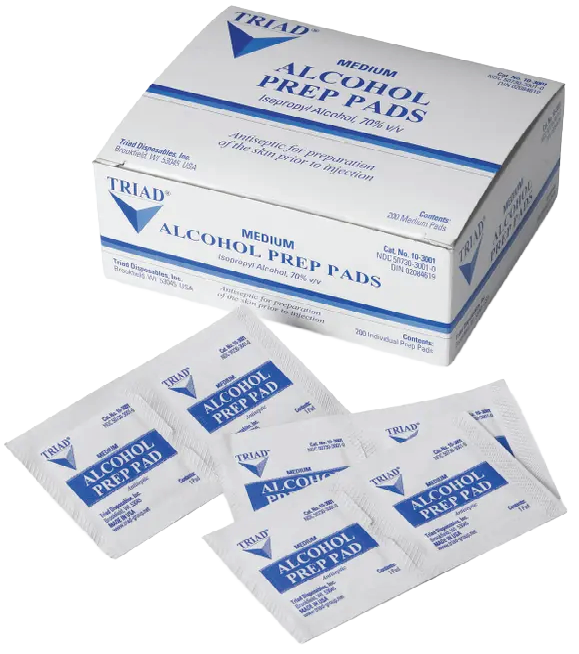
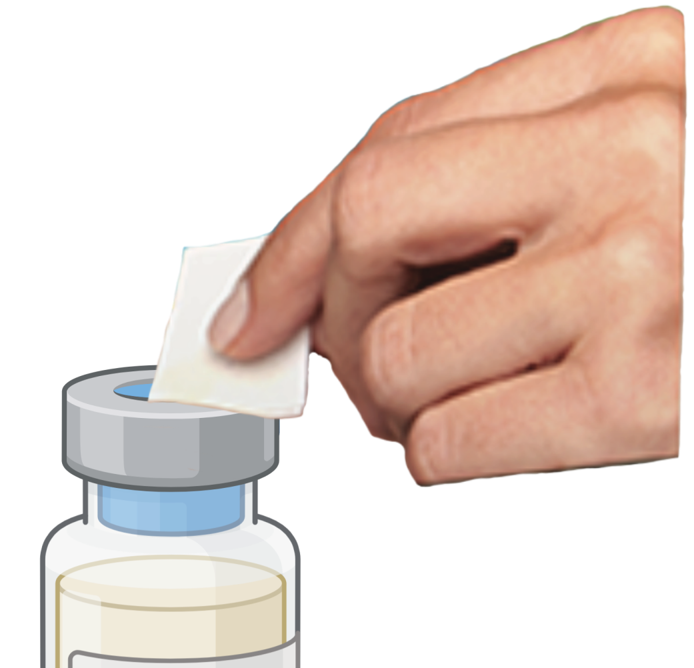
If you’re out of prep pads, it’s better to just skip vial cleaning this time.
Piercing the vial with a boba straw needle
Although many guides recommend it, don’t use 18G needles to draw from your vial.
These recommendations originally derive from research conducted in healthcare settings, where clinicians administer several injections per day to different patients.
In those settings, medication vials get used up very quickly and it makes sense to use a large needle to prioritize drawing speed. But for trans people who use one vial for a span of months or even years, we need to take better care of our vial stoppers than that! A busted stopper compromises your vial’s ability to stay sterile.
Studies of how many punctures a vial can withstand have found that needles of 22G or smaller cause much less damage than larger needles.2
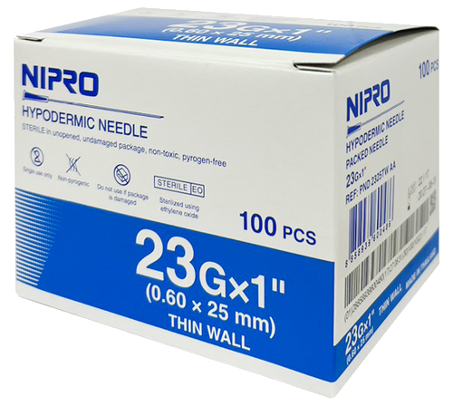
Remember: bigger gauge (G) = smaller needle!
Sterilizing your sterile needles
Yes, Trace Lysette did it in the movie Monica.
That doesn’t mean it’s a good idea!
Needles are sterile out of the package.
As long as the packaging hasn’t been damaged, you’re good to go as soon as you unwrap it. Swabbing the needle with something only introduces more potential contaminants to both your vial and your body!
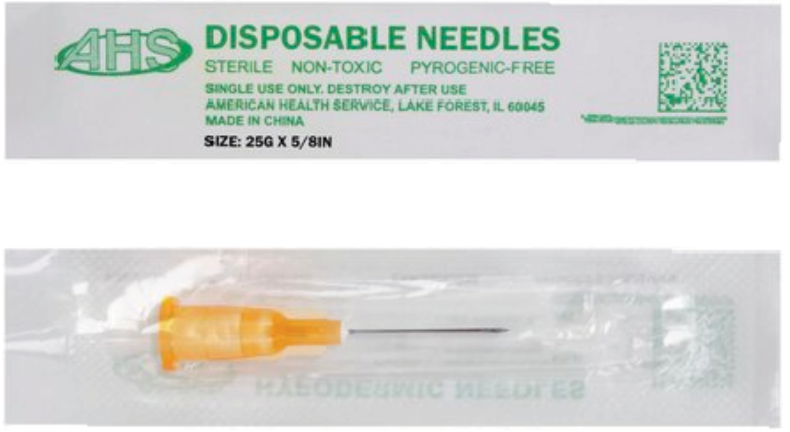
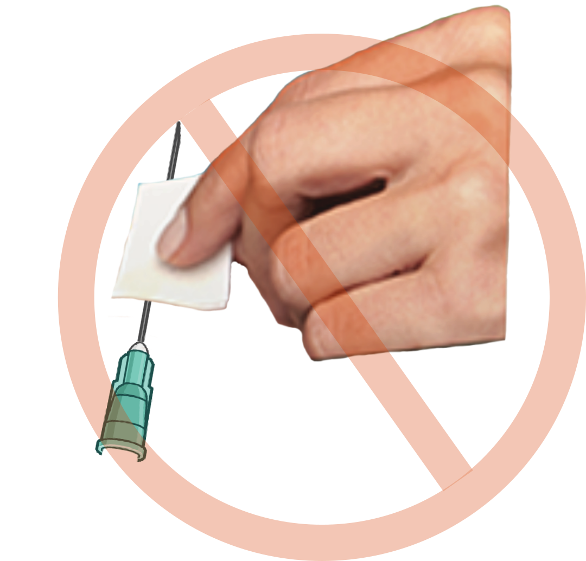
For insulin needles that come in multiple per bag, a bright orange cap should be covering the needle and plunger. These keep them sterile too!
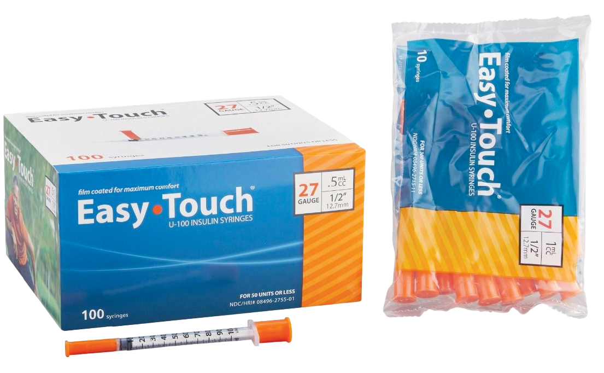
Misreading the markings on your syringe barrel
Make sure to read the units on your syringe barrel carefully. The dose is measured from the top of the plunger.
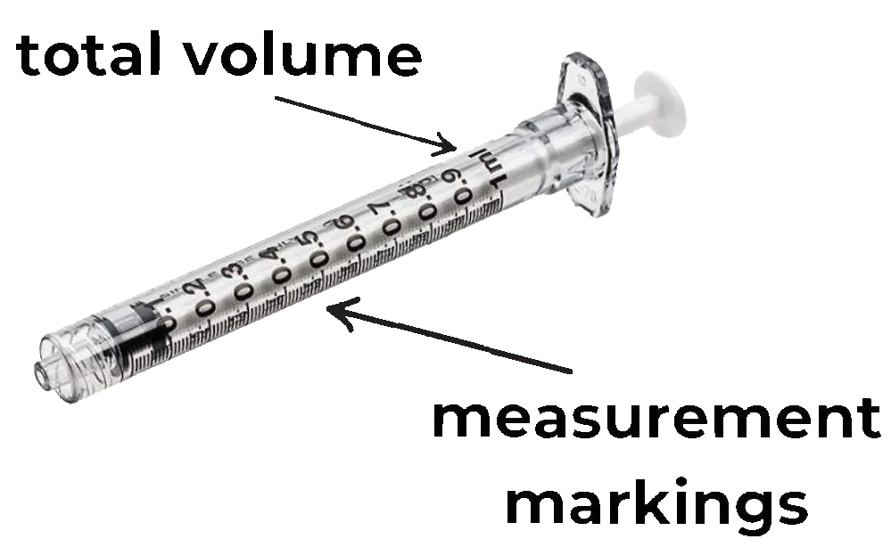
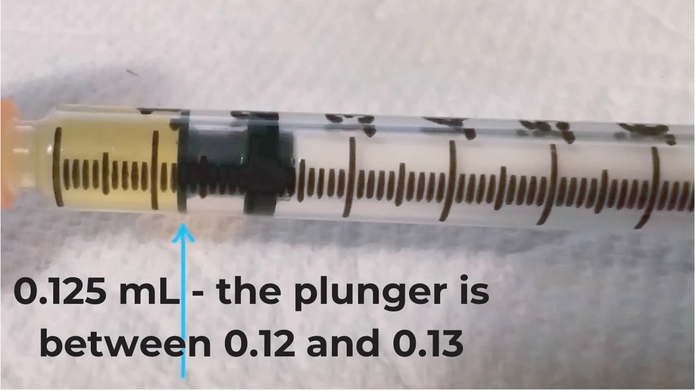
0.1mL is a small amount of liquid in most syringes. Don’t give yourself 10x as big of a dose by mistake!
For people who inject 0.1mL or less, insulin syringes come in 0.5mL and 0.3mL sizes and can be used for subcutaneous injection. It’s easier and more accurate to use these smaller syringes for small doses.
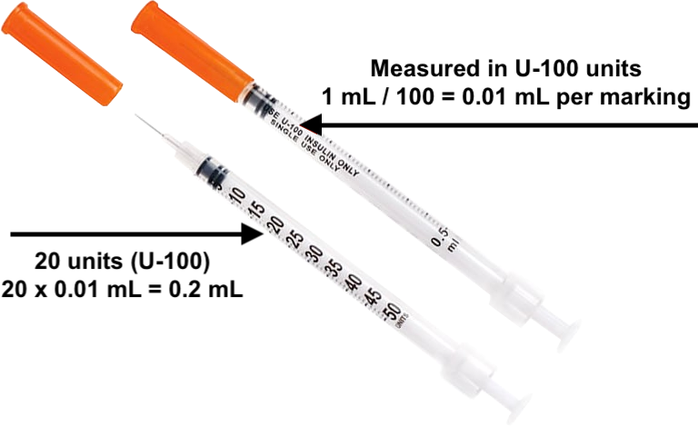
Insulin syringe markings measure insulin units.
1 mL = whatever the U number is.
For instance:
On a U-100 syringe, 100 units = 1 mL, so 10 units = 0.1 mL
On a U-40 syringe, 40 units = 1 mL, so 10 units = 0.25 mL
Tossing out your dose when swapping needles
Detachable needles and syringes always have some space that the plunger can’t fully push liquid out of, called deadspace.
![Illustration showing four types of syringe and needle hubs: (1) Standard syringe with standard detachable needle, high amount of deadspace (typically 92 uL = 0.092 mL) (2) Modified syringe with standard detachable needle, rubber plunger with narrow tip extending into the hub to push liquid out of the deadspace, reduced amount of deadspace (typically 59 uL = 0.059 mL) (3) Standard syringe with low deadspace needle, the inside of the needle hub has a narrow point which extends into the syringe hub to fill the deadspace (deadspace as low as 17 uL = 0.017 mL) (4) Low deadspace insulin syringe with fixed needle (deadspace typically 3 uL = 0.003 mL).](6-deadspace-diagram.png)
When swapping needles, make sure to draw in air before removing the drawing needle so you don’t lose your dose to the needle deadspace! It’s also possible to use air to flush out deadspace after injecting, a technique called airlocking.
Resources
Needle suppliers
US
- medlabgear.com
- allegromedical.com
- shopmedvet.com
- westendmedicalsupply.com
- medical-and-lab-supplies.com
Canada
UK
- exchangesupplies.org
- ukmedi.co.uk
- medisave.co.uk
- shdmedical.co.uk
- wearewithyou.org.uk
- needleexchange.scot
International
needle info + how-to videos
* note that this guide makes the bad recommendation of using 18G needles to draw! ignore that, it will core your vial. otherwise it’s a great resource.
find local needle exchanges in the US
needle disposal information by US state
Why 70% Ethanol is the Star of Sterilization: Mechanisms and Limitations↩︎
Ponto, J. A. (2013). Self-sealing capacity of vial stoppers after multiple needle punctures. Journal of the American Pharmacists Association: JAPhA, 53(1), 58–60. https://doi.org/10.1331/JAPhA.2013.12064↩︎